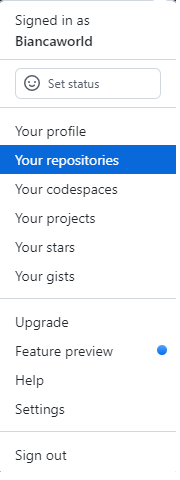

Create a new account on Github.com
Log into your Github account. Go to the top right corner and click your Icon . Then click Your repositories. Repositories = Folder where you can upload your HTML & CSS file. Create a New repository and add repository name to identify which repository is. Then click Create repository at the bottom.
Create your html file on your editor.
Upload your all existing files to your repositories using the Uploading the existing file link. Or you can use slash upload end of the url at the top and drag and drop off the files. Once all of file uploading you should be able to see all your files down. Then scroll down the very bottom click Commit changes button. Now all the files uploaded to the github.
Go to the repository Settings-> Pages drop down the source choose Main . You might see different word. Just pick the option None . Second dropdown you can leave it Default . Then click Save
After few minutes Refresh the page and you can see the URL. You can have the access with the URL. If you don't see the URL you can also access it using the github_username.github.io/repository_name. Type your repository name gihhub on a browser and go, you will see the page that you just loaded.